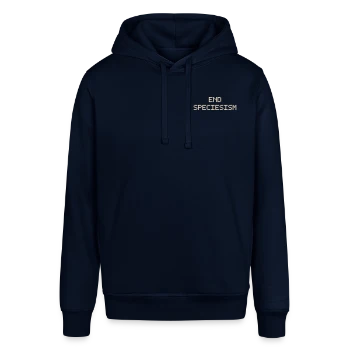

Vorder- und Rückendruck

Stanley/Stella SOUNDER · Unisex
End Speciesism Hoodie
Vorn ein kleiner Schriftzug auf der Brust. Hinten brechen Fuchs, Pferd, Schwein und Kuh durch den Asphalt.
- Mit Bio-Baumwolle
- Navy und Flaschengrün
56,99 €zzgl. Versand
Im Spreadshop kaufen